Lesson107–108 本地验收证据
小禾与欧阳小禾同学为虚构测试账号，不是体验同学的成果。本地检查不替代教师审阅、儿童体验、真机微信保存或实体打印。比较题的另设数值与原教材示意分开。
设计与验收 · 结果摘要 · 逐帧检查
店员展示绿裙，长句与主动中文320：女士持绿裙，蓝裙仍由店员展示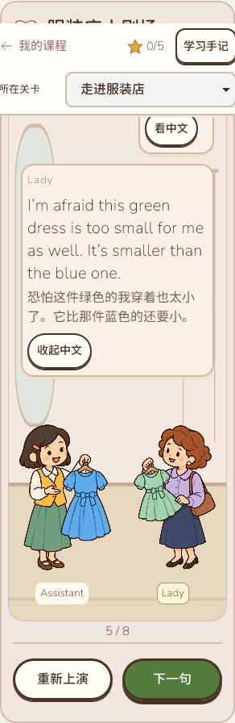
开场只有教材问题与人物地点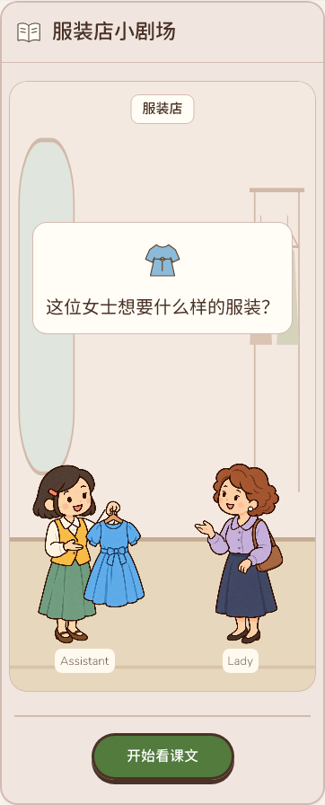
保留店内最大与未知结局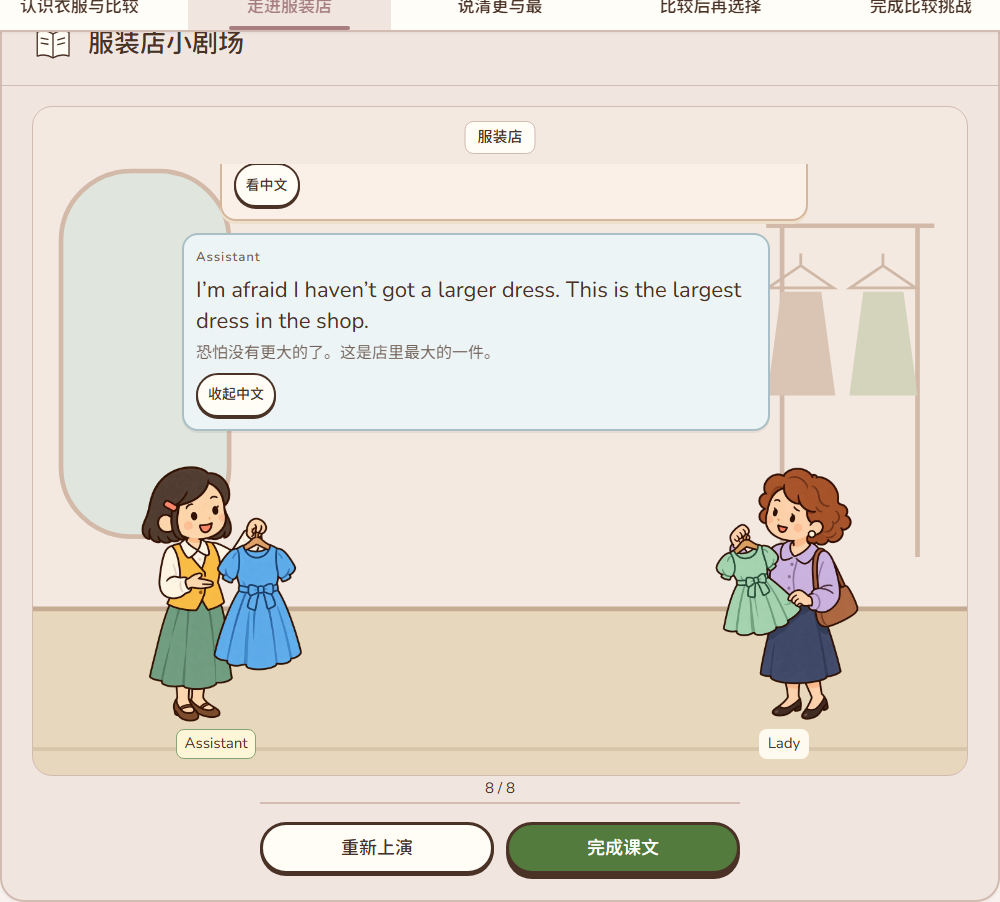
两处相关词形填齐后才能检查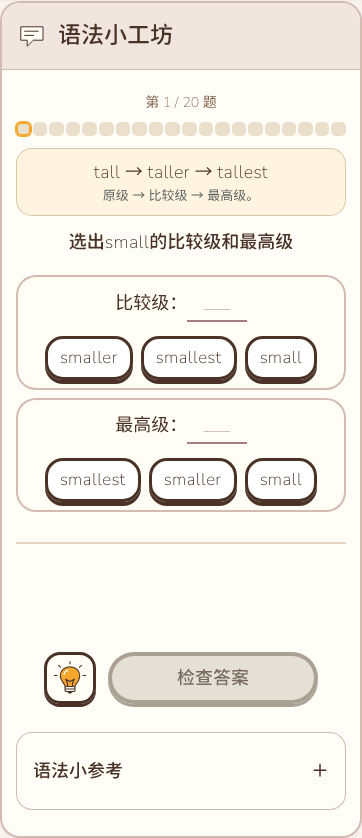
可见价格与less／least方向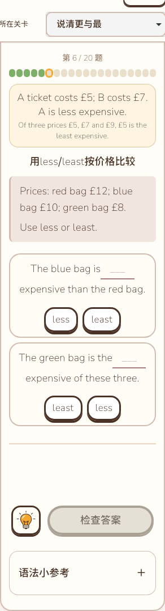
第三对象未知，不能断定最高级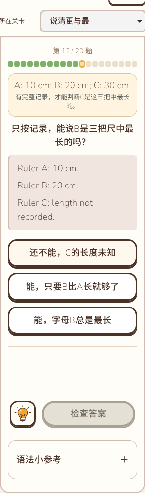
日期锚点与三天范围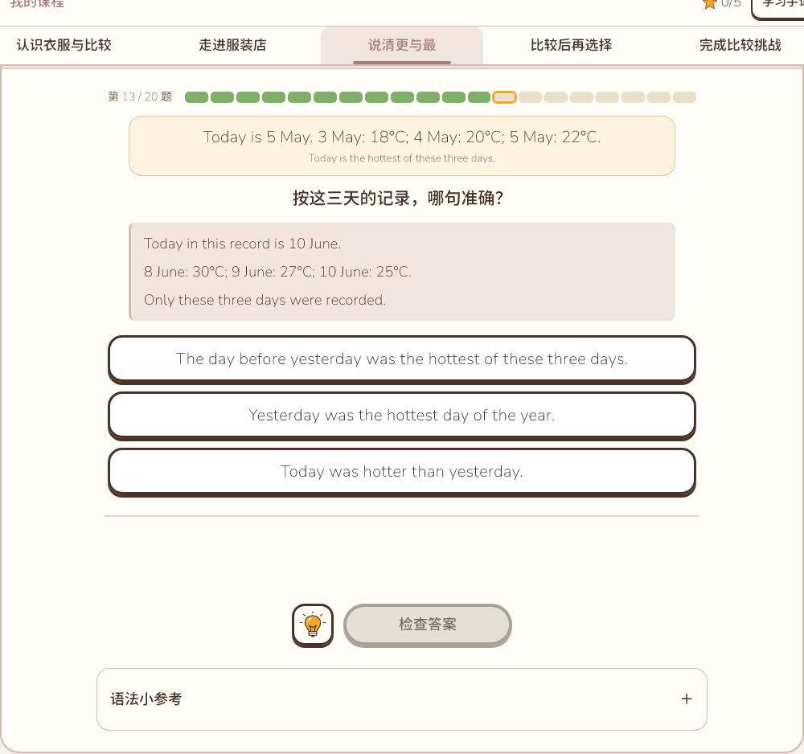
撤示范后独立表达最高级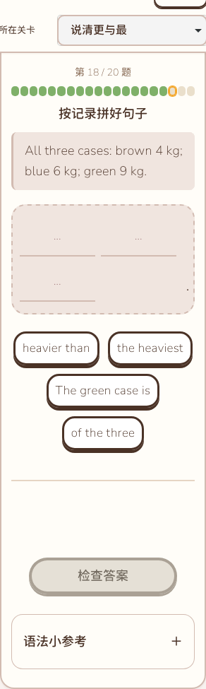
未答材料与独立4／6／9 kg箱图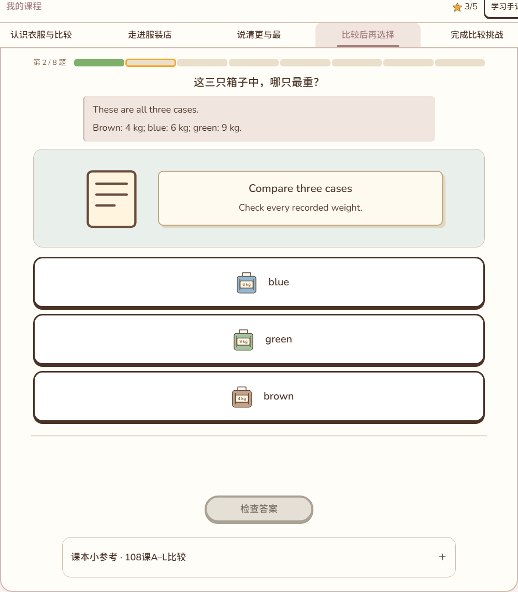
320展开三列形式表与A–L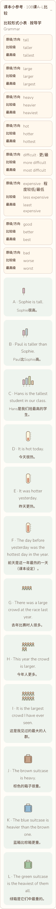
短屏三卡与操作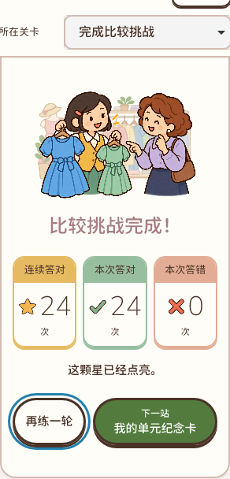
末组自然五词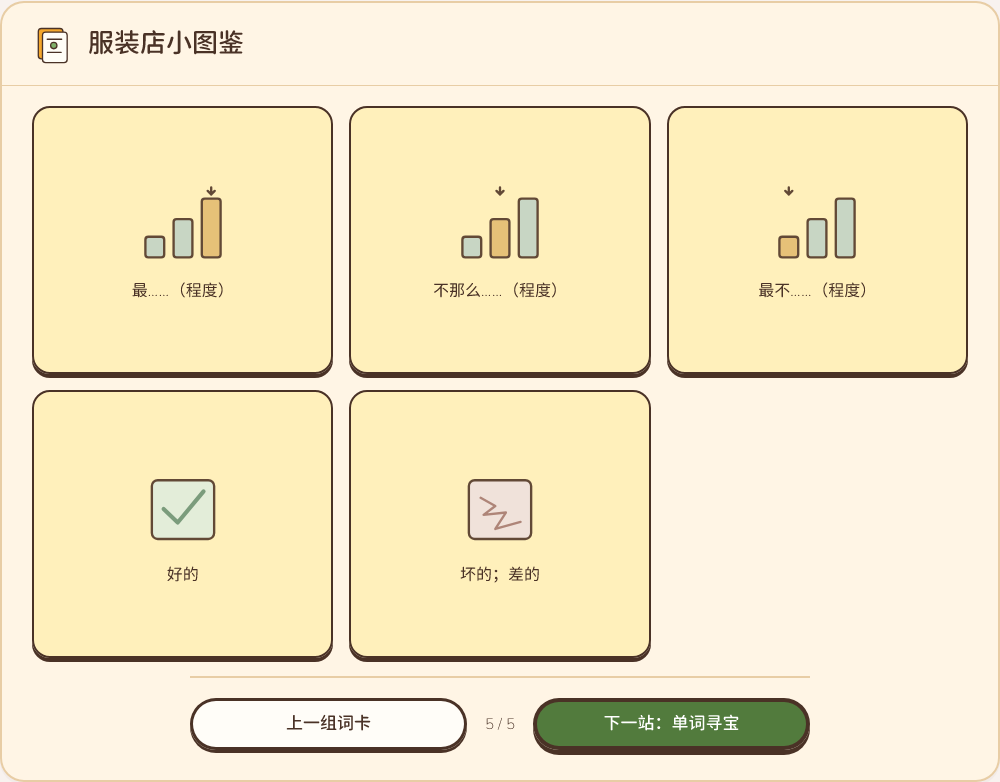
A5／B8／C6完整书写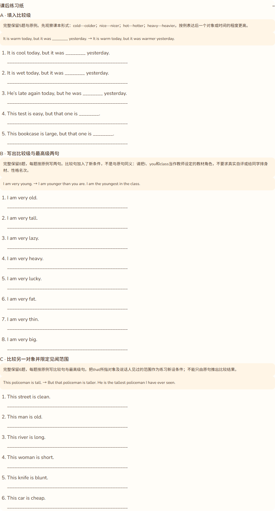
测试账号手机五星卡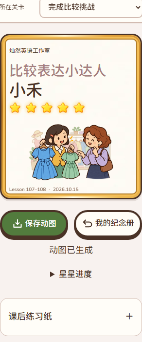
实际五星GIF第15帧纪念册放大卡长姓名手机卡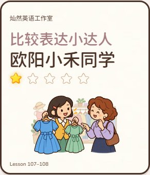
同姓名一星比较 Lesson 1-2 同姓名一星比较 Lesson 3-4
同姓名一星比较 Lesson 3-4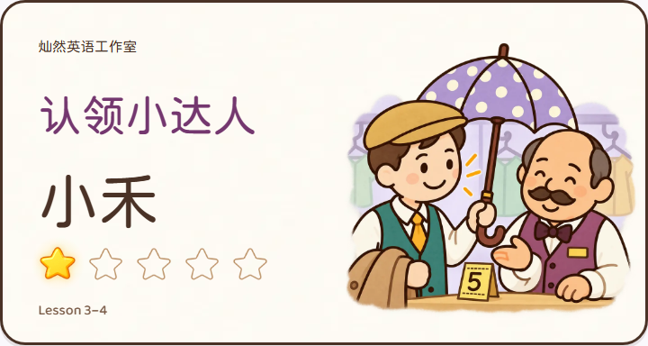
同姓名一星比较 Lesson 5-6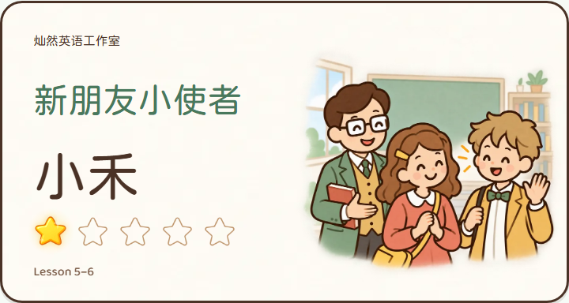
同姓名一星比较 Lesson 107-108实际一星动图实际五星动图